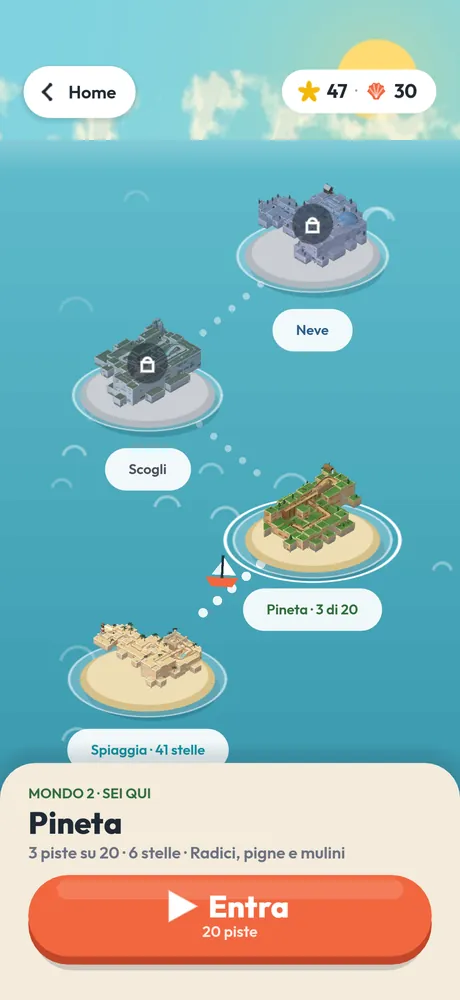
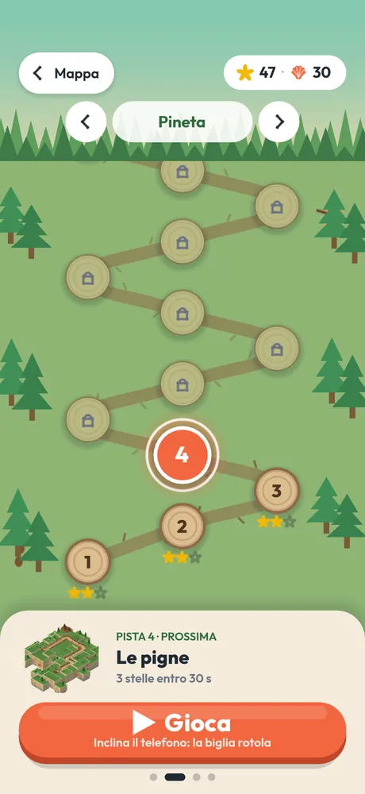

Quattro mondi, ottanta pisteFour worlds, eighty tracks
Spiaggia, Pineta, Scogli e NeveBeach, Pinewood, Cliffs and Snow
Venti piste per isola. Si parte piano, con una curva e una buca; si finisce con calamite, scivoli, carrelli, mulini, ponti levatoi e strettoie, una dopo l'altra.Twenty tracks each. It starts gently, with a bend and a hole; it ends with magnets, slides, carts, mills, drawbridges and narrows, one after the other.

